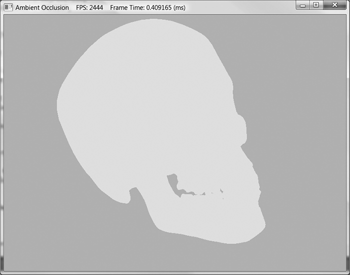
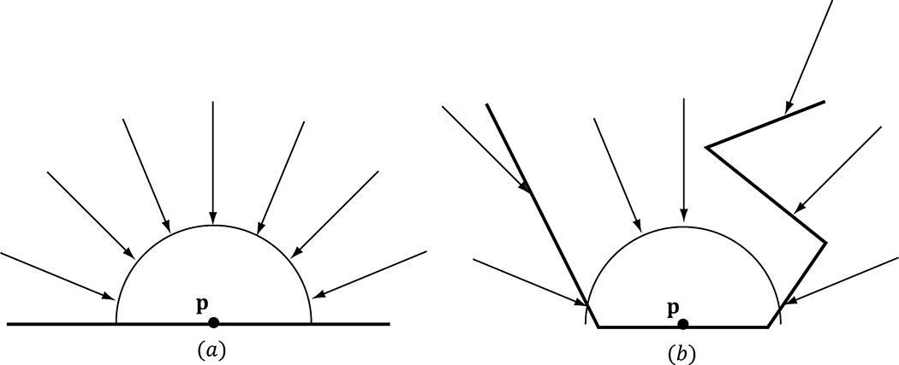
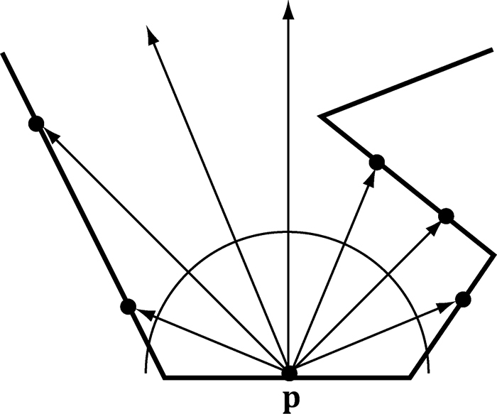
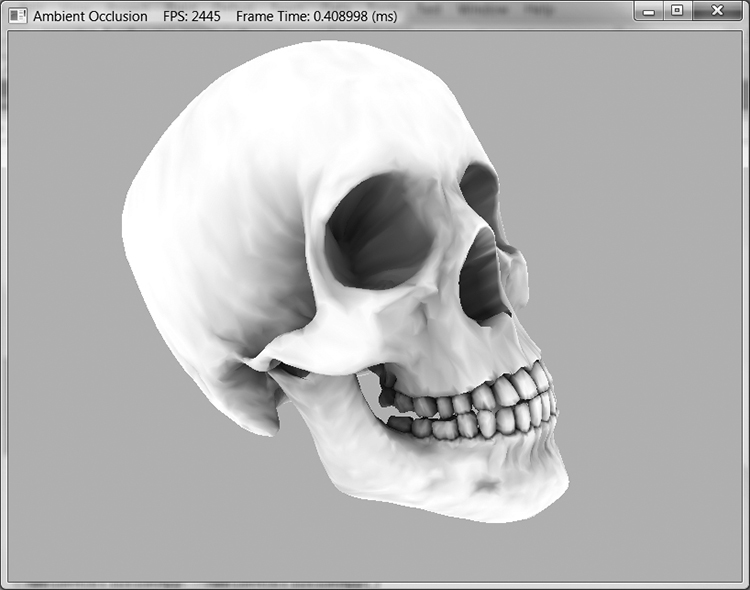
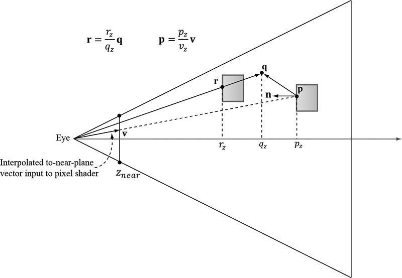
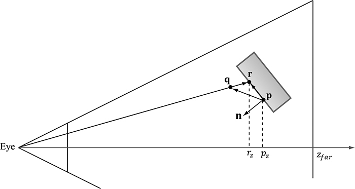
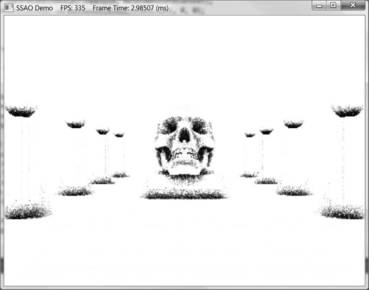
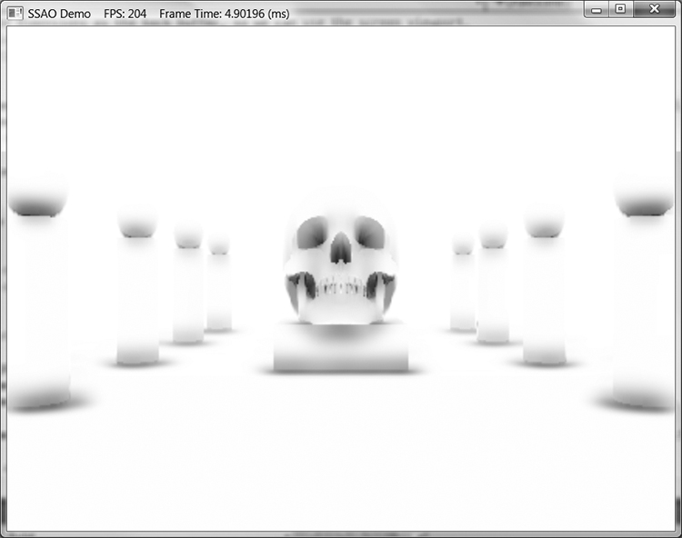
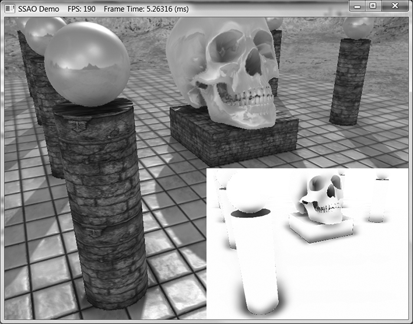
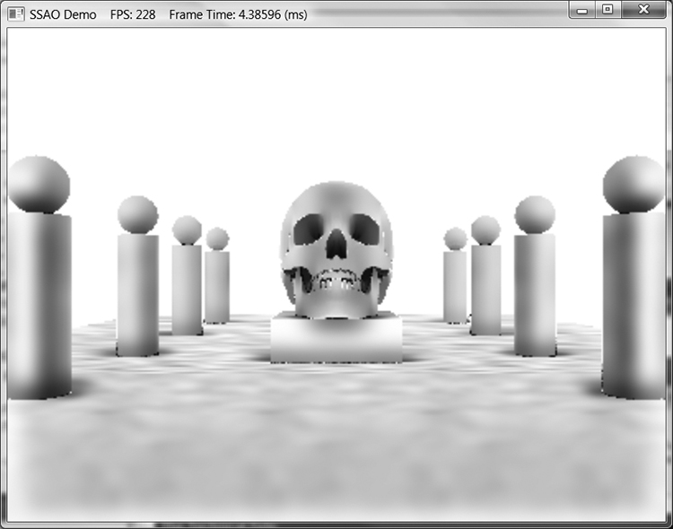

第三部分 · 进阶主题
对应示例：SSAO Demo
本章学习目标（Objectives）
- 理解环境光遮蔽（AO）"让缝隙变暗、细节立现"的原理；
- 理解射线法 AO 与实时方案 SSAO 的算法；
- 了解噪点、模糊、法线重建等工程细节。
环境光是"作弊的均匀亮"，结果角落、缝隙和真实世界一样亮——假。AO 按遮挡程度压暗环境光，画面立刻"落地"。
21.1 射线法环境光遮蔽（Ambient Occlusion via Ray Casting）
点 p 的环境光遮蔽 = 它上半球方向 incoming light 被几何挡掉的比例。离线算法：从 p 向上半球随机发射 N 条射线，被场景挡住的比例即遮蔽度 A(p)（无遮挡 A=1，全遮挡 A=0），最终环境光 = ambient × A(p)。可离线烘焙进贴图（静态物体），精确但太慢，不能每帧做。
A(p) = (未遮挡射线数) / (总射线数) ; lit = ambient · A(p) + 直接光
21.2 屏幕空间环境光遮蔽（Screen Space Ambient Occlusion, SSAO）
实时近似（Crytek 2007 的思路，本章实现简化版）：
- 重建位置：渲染一遍场景深度到缓冲；全屏 pass 里从深度重建每个像素的世界/视角位置 p（书中推导由屏幕坐标 + 深度 + 逆投影恢复的公式）；
- 法线：由深度缓冲差分求法线（或另渲染法线缓冲）；
- 采样：在 p 上方的半球内取 N 个随机方向 r（半高 h 内），各自从深度缓冲"读出"该方向的场景表面点 s；
- 遮挡测试：若 |p_z − s_z| 很小（s 就在 p 身上）→ 不算遮挡；若 s 在 p 与其法线平面构成的"切平面之下"且距离差超过阈值 → 遮挡（书中给出判定的几何图解与公式）；
- 平均：N 个样本的被遮挡比例 ≈ A(p)。
⚠️ 噪点：样本少 → 结果颗粒感强（书中对比图）。对策：逐像素随机旋转采样核再模糊；demo 用边缘保持模糊（edge-preserving blur，深度差大的边界不跨过去模糊）做 4 遍，噪声变平滑污渍但不糊边。
最后把 AO 应用到环境光项（只压暗 ambient，不动直接光），与阴影贴图叠加：阴影挡直接光、AO 挡间接光——两种"暗"职责分明。
💡 读完做实验：把 AO 半径调大调小；关掉模糊看纯噪声；把 AO 也应用到直接光看"假"的效果。
本章小结
- AO = 半球入射光被遮挡比例，缝隙角落变暗 → 体积感。
- 离线射线法精确但慢；SSAO 用深度缓冲 + 屏幕空间采样实时近似。
- 关键步骤：深度重建位置 → 半球随机采样 → 遮挡判定 → 边缘保持模糊。
- AO 只作用于环境光项。
🖼️ 原书插图（10 张，点击展开）









